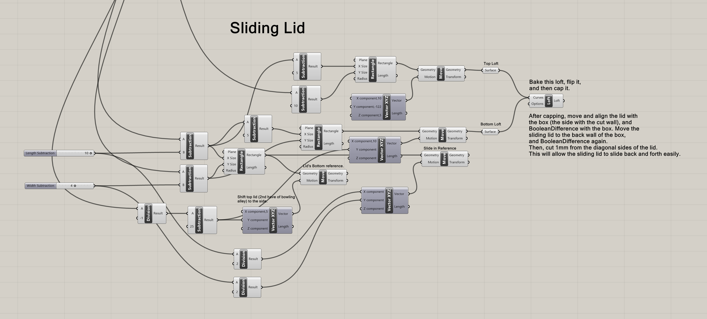
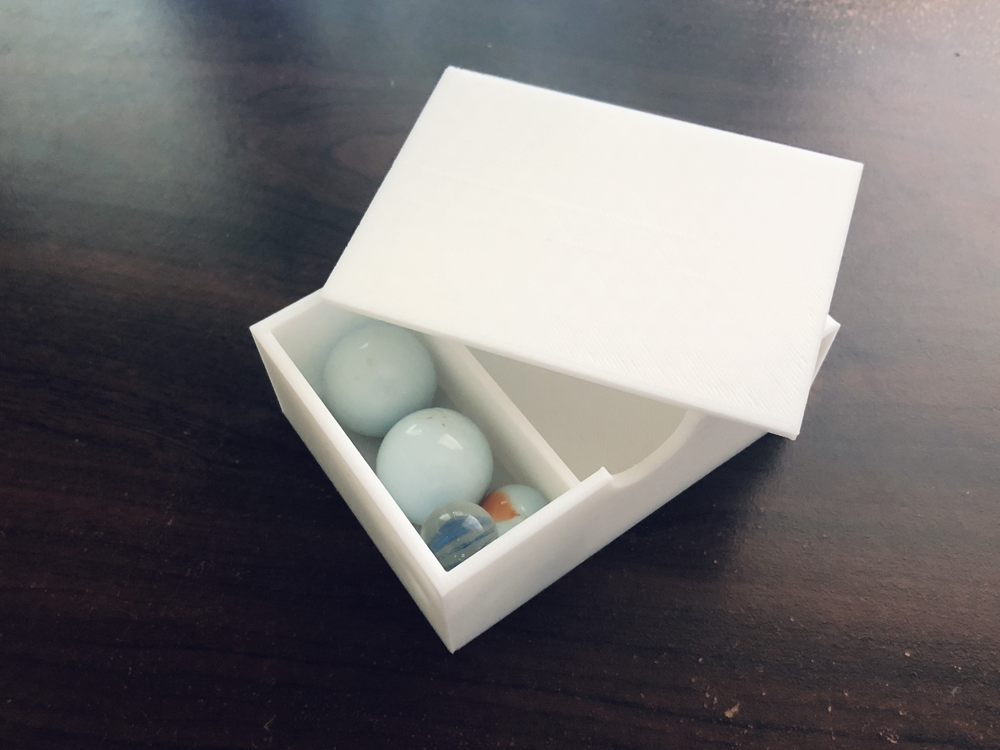
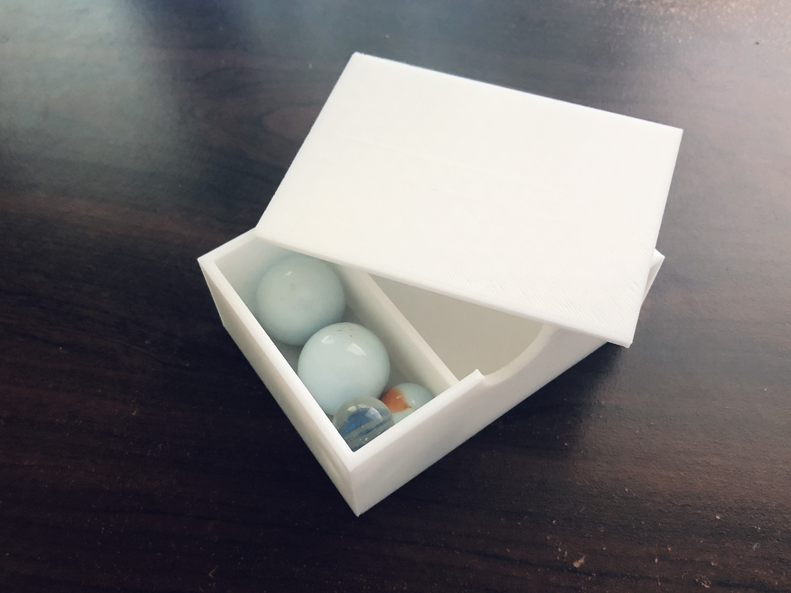
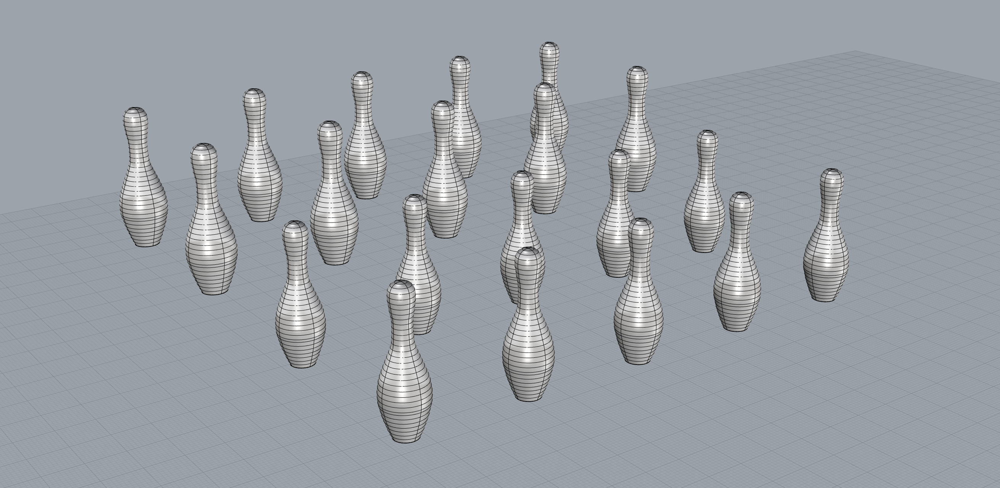

Final Project: Let's Go Bowling!

Mini Tabletop Bowling Game
For my final project, I'm made a mini tabletop bowling game!
The game is packaged in a 3D-printed box that converts into a bowling alley. The includes 2 sets of bowling
pins,
3 bowling balls, and 1 set of bowling blocks, which are packaged in a storage
container that fits inside the box. It fits easily into a backpack so you can take it anywhere.
Game Box Dimensions: 6" x 4" x 2"
Approx~ 14 oz.
Project Duration: 2 Weeks
Assembly
Here are all the parts!

Here's how to assemble the bowling alley:
Ways to Play
There are 2 ways that I enjoy playing the game, but you may find more ways to enjoy it!
1. Set up the bowling alley and knock over as many pins as you can.
2. Build arches with the bowling blocks and try to roll the bowling ball through all the arches.
Storing
Putting everything away is fast and easy!
The Process

Initial Sketch
I utilized the following tools and techniques to accomplish my project: Rhino, Grasshopper,
Slicing, 3D Printing, Silicone Molds, and Casting. See my
final project proposal
to view the plan!
I dedicated more time to this project than planned during the first week, so I was 90% finished
with the project in the first 7 days. After testing the experience, I realized there was several
improvements that I could make so the second week was dedicated to improvements.
Modeling
I modeled a total of 11 parts, not including multiple versions and test print models of the same part. I started by modeling the 3-part box that converts into a bowling alley. I used Grasshopper to aid the modeling process (learned how to extrude, loft, and create a surface from a curve)! To help future me understand what the Grasshopper definition does, I made notes to remind myself what the different areas of the definition do: whether something is solely a reference or if I should bake it.

I used Grasshopper to help model 2/3 of the box components. I modeled the last piece, the clip, in Rhino.
After the modeling for the box was done, started printing! I then continued modeling by making the molds
for my silicone molds. I made three silicone molds in total: 15mm diameter sphere, 25 mm diameter sphere,
and bowling pins. The last thing I needed to model was a storage case for the bowling pins and balls. I used
Grasshopper to help model part of it, and after baking, did the rest in Rhino. I later ended up modeling a
larger version of the storage box and more bowling pins.
Here are all the models (including the additional models from second week improvements)!
Printing
I did all prints with white PLA filament! I did a total of 19 prints, including test prints. I started off by printing the box (9h13m @ low quality). I then did a test print (41m @ low quality) of the sliding lid to test the fit with the box. I only printed the portion of the sliding lid that I needed, as seen below. This piece would allow me to check how well the lid snaps with and slides into the box.

The printed test piece slided and snapped well! I continued by printing the full sliding lid (3h26m @ low
quality).
Afterwards, I printed the clip/closing piece for the box. I didn't do any test prints for this piece and
printed
the full part (1h34m @ low quality). This part fit poorly with the other 2 box parts, because it was too loose.
I went back into Rhino to adjust the size of the notches to fit better, and then printed the piece again (1h35m
@ low quality). This piece ended up being too tight. I took a box cutter and shaved the sides of the print that
weren't fitting, until the piece could snap into the other 2 box pieces. That wasn't ideal, but it worked.
I moved on to printing the molds-for-molds. I started by printing the molds for the larger sphere (6h43m @
dynamic
quality). As I went on to print the molds for the smaller sphere, I mistakenly printed a second set of molds for
the larger sphere (another 6h43m @ dynamic quality). Paying more attention, I later printed the molds for the
small sphere (2h @ dynamic quality) and the mold for the bowling pins (4h27m @ low quality).
Finally, I printed the storage box and lid (7h1m @ low quality) for the bowling balls and initial pins. I wanted
the
lid to fit more snug so I adjusted the Rhino model and printed again (2h14m @ low quality).
Here are the final prints!


 

Molds
Then it was time to make the silicone molds for the bowling balls and pins! I made 2
2-part silicone molds to make different sized bowling balls and a one-part silicone
mold to make the bowling pins.
Similar to what I did in the molds and casting project, I prepared my workstation by
covering the table surface, mixed equal parts of part A and part B together for at least
3 minutes until the entire mixture was a lavender color, and poured the silicone in.
I let the molds cure for 7 hours (at least 6) before removing them. Here are my silicone molds!
Casting
Afterwards, I began casting the bowling balls and pins. When I was modeling, I wanted to make sure that the pouring hole was large enough, but later on realized that I could have made it smaller. I used a box cutter to shave off the excess cast material to achieve the spherical shape for the bowling balls.

Finishes
After casting, I painted the bowling pins and balls! At this point, I was almost done with everything listed on my proposal.

Testing
I then tested the bowling experience, but it wasn't as satisfying as I had hoped. The casted bowling pins didn't disperse well and would lean against each other when knocked over.

disappointment üòê
I remembered that when I was modeling the pins, I had 3D printed them to gauge different bowling pin sizes on the alley. The 3D-printed pins dispersed much better and made a satisfying sound. I had one more week to work on the project, so I decided that week 2 would be for improvements!
Second Week Improvements
During the second week, I:
-Remodeled and printed the box's clip.
Remember when the clip was too tight and I used
a box cutter to shave the print until it fit? I went back into Rhino, remodeled the clip, printed it
(1h35 @ low quality),and now it fits!
-Remodeled and printed the smaller storage container's lid.
Before deciding on modeling a new, larger storage container, I worked
on improving the previous storage container's lid so it had a better fit. It took 3 tries (modeling +
printing) to get a fit I was happy with.
-Modeled and printed 2 sets of bowling pins.
Since I was 3D-printing my pins now, I decided to go for a more
traditional bowling pin shape. I modeled the pins in Rhino, did some test prints, couldn't decide
on which size pin I wanted to use, so I printed 2 sets of bowling pins (3h58 @ low quality). Now that I had new pins, I
decided to rename my initial bowling pins (the rectangular blocks) as bowling blocks.


-Painted bowling pins.
-Modeled and printed new large storage container to hold all parts.
I didn't need to model and print a new storage container
since I could have just used the old one. However, the smaller storage container could only hold
1 set of bowling pins/blocks, and I liked the bowling blocks so much that
I wanted a storage container that fit all the parts I made (10h32 @ low quality).
 Once the improvements were done, my final project was complete! If I had even more time to work, I would
have made a mini bowling instructions pamphlet and decorated the outside of the box.
Once the improvements were done, my final project was complete! If I had even more time to work, I would
have made a mini bowling instructions pamphlet and decorated the outside of the box.
Scroll to the top to see the final result!
Access images, 3D models, Grasshopper definitions, and STL files on GitHub.